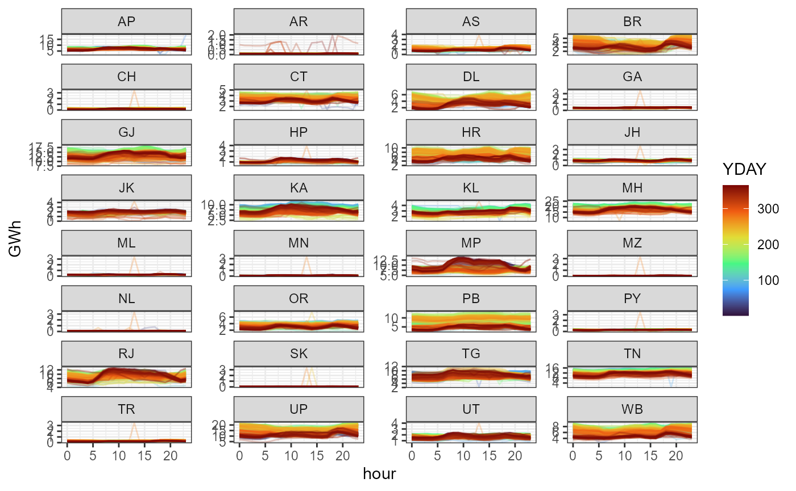

discussion of data sets used in the library
library(IDEEA)
library(tidyverse)
library(sf)
library(data.table)
library(ggthemes)
home_dir <- getwd()Generating capacity
Global Power Plant Database https://datasets.wri.org/dataset/globalpowerplantdatabase v1.3.0
ggplot(get_ideea_map(nreg = 36, offshore = T, islands = T, ROW = T)) +
geom_sf() +
geom_point(aes(longitude, latitude, color = primary_fuel, size = capacity_mw),
data = pp, alpha = .5) +
scale_color_viridis_d(option = "H", direction = -1) +
# theme_bw() +
labs(x = "", y = "") +
theme_void()
Power plants location by fuel and capacity
Source: WRI.
Demand, load curve
load_2019_MWh <- ideea_data$load_2019_MWh %>%
mutate(
datetime = timeslices::tsl2dtm(slice, tmz = "Asia/Kolkata", year = 2019),
YDAY = timeslices::tsl2yday(slice),
HOUR = timeslices::tsl2hour(slice),
.after = "slice"
)
ggplot(load_2019_MWh) +
geom_line(aes(HOUR, MWh/1e3, color = YDAY, group = YDAY), alpha = .25) +
scale_color_viridis_c(option = "H", limits = c(1, 365)) +
facet_wrap(~reg36, ncol = 4, scales = "free_y") +
labs(y = "GWh", x = "hour") +
theme_bw()
ggsave("load_2019_reg36.png", width = 7, height = 9, path = "tmp")
load_2019_reg7 <- load_2019_MWh %>%
group_by(reg7, slice, datetime, YDAY, HOUR) %>%
summarise(MWh = sum(MWh, na.rm = T), .groups = "drop")
# mutate(
# datetime = timeslices::tsl2dtm(slice, tmz = "Asia/Kolkata", year = 2019),
# YDAY = timeslices::tsl2yday(slice),
# HOUR = timeslices::tsl2hour(slice),
# .after = "slice"
# )
ggplot(load_2019_reg7) +
geom_line(aes(HOUR, MWh/1e3, color = YDAY, group = YDAY), alpha = .25) +
scale_color_viridis_c(option = "H", limits = c(1, 365)) +
facet_wrap(~reg7, ncol = 1, scales = "free_y") +
labs(y = "GWh", x = "hour") +
theme_bw()Wind capacity factors
library(merra2ools)
gis_sf <- get_ideea_map(36, offshore = T, islands = T)
ideea_locid <- get_locid(gis_sf)
ideea_locid_sf <- get_merra2_grid(type = "poly", locid = ideea_locid)
wind_clusters <- get_ideea_data(name = "merra_wind_clusters", raw = T)
# Cluster 10% loss
locid_win_cl_k <- wind_clusters %>%
filter(sd_loss <= .1) %>%
group_by(reg36_off) %>%
mutate(k_min = (k == min(k))) %>% ungroup() %>%
filter(k_min) %>% select(-k_min) %>%
as.data.table()
# Cluster-loss figure
locid_win_cl_kk <- wind_clusters %>%
group_by(reg36_off, k) %>%
summarise(sd_loss = max(sd_loss), N = max(N), .groups = "drop")
locid_win_cl_k_i <- locid_win_cl_k %>%
group_by(reg36_off, k) %>%
summarise(sd_loss = max(sd_loss), N = max(N), .groups = "drop")
a <- ggplot(locid_win_cl_kk) +
geom_line(aes(k, sd_loss), color = "dodgerblue", linewidth = 1.5) +
geom_point(aes(k, sd_loss), color = "red", data = locid_win_cl_k_i) +
scale_y_continuous(labels = scales::percent, limits = c(0, NA)) +
# scale_x_continuous(breaks = rev_integer_breaks(5)) +
labs(x = "Number of clusters (k)",
y = "loss, % of s.d.",
title = "Aggregation lossess by number of clusters") +
facet_wrap(~paste0(reg36_off, " (", N," locations)"), scales = "free",
ncol = max(1, round(36 / 5))) +
theme_bw()
ideea_wind_sf <- ideea_locid_sf %>%
full_join(locid_win_cl_k) %>%
filter(!is.na(k)) %>%
left_join(select(merra2ools::mean_cf, locid, starts_with("waf"))) %>%
group_by(reg36_off, cluster) %>%
summarise(
wcf100m = mean(waf100m, na.rm = T),
area_km2 = sum(area)
)
fig.wind.clusters <- ggplot() +
geom_sf(data = gis_sf) +
geom_sf(aes(fill = wcf100m), data = ideea_wind_sf, color = alpha("white", .75)) +
geom_sf(data = gis_sf, fill = NA, color = alpha("black", 1)) +
scale_fill_viridis_c(option = "D", name = "CF", limits = c(.1, NA)) +
theme_map()Wind capacity factors clusters (< 10% sd loss)
Solar capacity factors
code
library(merra2ools)
gis_sf <- get_ideea_map(36, offshore = T, islands = T)
ideea_locid <- get_locid(gis_sf)
ideea_locid_sf <- get_merra2_grid(type = "poly", locid = ideea_locid)
sol_clusters <- get_ideea_data(name = "merra_solar_clusters", raw = T)
# Cluster 10% loss
locid_sol_cl_k <- sol_clusters %>%
filter(sd_loss <= .01) %>%
group_by(reg36_off) %>%
mutate(k_min = (k == min(k))) %>% ungroup() %>%
filter(k_min) %>% select(-k_min) %>%
as.data.table()
# Cluster-loss figure
locid_sol_cl_kk <- sol_clusters %>%
group_by(reg36_off, k) %>%
summarise(sd_loss = max(sd_loss), N = max(N), .groups = "drop")
locid_sol_cl_k_i <- locid_sol_cl_k %>%
group_by(reg36_off, k) %>%
summarise(sd_loss = max(sd_loss), N = max(N), .groups = "drop")
a <- ggplot(locid_sol_cl_kk) +
geom_line(aes(k, sd_loss), color = "dodgerblue", linewidth = 1.5) +
geom_point(aes(k, sd_loss), color = "red", data = locid_sol_cl_k_i) +
scale_y_continuous(labels = scales::percent, limits = c(0, NA)) +
# scale_x_continuous(breaks = rev_integer_breaks(5)) +
labs(x = "Number of clusters (k)",
y = "loss, % of s.d.",
title = "Aggregation lossess by number of clusters") +
facet_wrap(~paste0(reg36_off, " (", N," locations)"), scales = "free",
ncol = max(1, round(36 / 5))) +
theme_bw()
ideea_sol_sf <- ideea_locid_sf %>%
full_join(locid_sol_cl_k) %>%
filter(!is.na(k)) %>%
left_join(select(merra2ools::mean_cf, locid, starts_with("saf_"))) %>%
mutate(area = as.numeric(st_area(geometry))/1e6) %>%
group_by(reg36_off, cluster) %>%
summarise(
scf_tl = mean(saf_tl, na.rm = T),
sol_MW_max = sum(sol_MW_max, na.rm = T),
area_km2 = sum(area, na.rm = T)
)
fig.sol.clusters <- ggplot() +
geom_sf(data = gis_sf) +
geom_sf(aes(fill = scf_tl), data = ideea_sol_sf, color = alpha("white", .75)) +
geom_sf(data = gis_sf, fill = NA, color = alpha("black", 1)) +
scale_fill_viridis_c(option = "B", name = "CF", limits = c(.2, NA)) +
theme_map()
# ggsave("vignets/images/fig.sol.clusters.")Solar capacity factors clusters (< 1% sd loss)
ggplot() +
# geom_sf(data = ideea_maps$ROW$ROW$sf, inherit.aes = F) +
geom_sf(fill = "wheat", data = ideea_maps$r34$land$sf, inherit.aes = F) +
geom_point(aes(Longitude, Latitude, color = as.logical(`Is Offshore`)),
size = .1, data = nrel_wind_locations, alpha = .15, show.legend = F) +
scale_color_brewer(palette = "Set1") +
geom_point(aes(longitude, latitude, size = capacity_mw),
data = filter(pp, primary_fuel == "Wind"),
alpha = .75, inherit.aes = F, color = "blue", shape = 1) +
scale_size_continuous(range = c(.05, 3)) +
theme_bw() +
labs(x = "", y = "")Potential sites to deploy wind power plants, onshore and offshore, and installed capacity (MW)
Source: NREL, Global Wind Atlas.